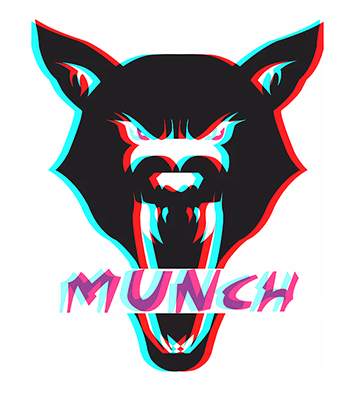

King B was inspired by his martial arts videos and decided to form his new company: Munch Fitness. Munch Fitness LLC was established by Bobby Hill in 2017 as a fitness apparel and nutrition retail store. The company’s name derives from Hill’s childhood nickname, which emulates the company’s mission to: “Motivate Unrestricted Nutritious Clean Health.”
Munch Fitness designs iconic, innovative and must-have lifestyle products that will keep you at peek performance. Our company also looks to aid you in finding the right nutritious supplements that will fuel your fitness journey. On our site you will find products that range from sports compression, shirts/tops, hoodies/pants, and bodybuilding supplements. Become a subscriber to receive access to workout videos and meal prep tips that will help your fitness goals become a reality.
he Munch Wolf in the company’s logo represents the transformation of ones self with purple eyes that will witness your fitness transformation in longevity.
